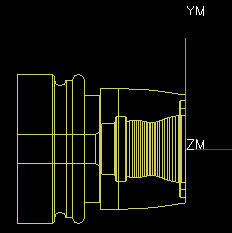

You will change the display of the part so you can see the inner and outer contours clearly.
In the background of the graphics window, right-click and choose Orient View→Top.
Right-click again and choose Rendering Style→Static Wireframe.
